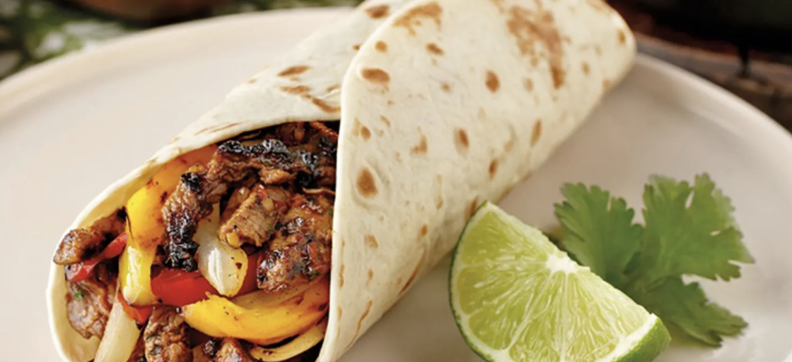

Fajitas
Home

Description
Need a simple, vibrant midweek meal the family will love? Put
together these easy chicken fajitas and people can create their own
masterpieces at the table.
Ingredients
- 2 chicken breasts, finely sliced
- 1 red onion, finely sliced
- 1 red pepper, sliced
- 1 red chilli, finely sliced
- 1 tbsp smoked paprika
- 1 tbsp ground coriander
- Ground cumin
- 2 garlic cloves, crushed
- 4 tbsp olive oil
- 1 lime, juiced
- Tabasco
- 8 tortillas
- Mixed salad
- 230g fresh salsa
Steps
-
Heat oven to 200C/180C fan/gas 6 and wrap 8 medium tortillas in
foil.
-
Mix 1 heaped tbsp smoked paprika, 1 tbsp ground coriander, a
pinch of ground cumin, 2 crushed garlic cloves, 4 tbsp olive
oil, the juice of 1 lime and 4-5 drops Tabasco together in a
bowl with a big pinch each of salt and pepper.
-
Stir 2 finely sliced chicken breasts, 1 finely sliced red onion,
1 sliced red pepper and 1 finely sliced red chilli, if using,
into the marinade.
-
Heat a griddle pan until smoking hot and add the chicken and
marinade to the pan.
-
Keep everything moving over a high heat for about 5 mins using
tongs until you get a nice charred effect. If your griddle pan
is small you may need to do this in two batches.
-
To check the chicken is cooked, find the thickest part and tear
in half - if any part is still raw cook until done.
-
Put the tortillas in the oven to heat up and serve with the
cooked chicken, a bag of mixed salad and one 230g tub of fresh
salsa.